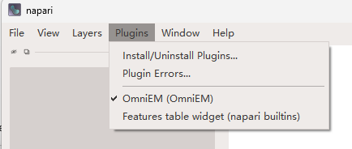

Installation
Napari-OmniEM is installed from source: clone the repository, create an environment, install the plugin, then download the pre-trained weights.
1. Clone the repository
The code, configs, and example data are on GitHub:
git clone https://github.com/pku-maleilab/napari-omniem.git
cd napari-omniem
2. Create the environment and install the plugin
Run these from the repository root (the napari-omniem/ directory you just cloned into):
# Create a new conda environment (Python 3.11 required)
conda create -n napari-omniem python=3.11
conda activate napari-omniem
# Install PyTorch first. Choose the command for your platform (CUDA version
# or CPU) from the official selector: https://pytorch.org/get-started/locally/
# Example (CUDA 11.8):
pip install torch torchvision torchaudio --index-url https://download.pytorch.org/whl/cu118
# CPU-only alternative:
# pip install torch torchvision torchaudio
# Install the plugin in editable mode from the repository root.
# Editable mode is required: the plugin loads weights from the
# weights_split/ folder relative to the cloned repository (step 3).
# This also pulls omniem from PyPI (a normal dependency).
pip install -e .
3. Download the pre-trained weights
The model weights are distributed separately. Download the weights_split folder from Google Drive. Place its contents into a weights_split/ folder at the root of the cloned repository, so the layout is:
napari-omniem/ # the cloned repository root
├── pyproject.toml # (already present) editable-install target
├── README.md # (already present)
├── src/ # (already present) the plugin source
└── weights_split/ # (you create this) place the downloaded files here
├── backbone_4246a479.pt # shared ViT-L backbone (~1.2 GB)
├── head_denoise-emdiffuse-l.pt
├── head_superreso-emdiffuse-l.pt
├── head_mito-seg-ViT-L-2D.pt
└── head_mito-seg-ViT-L-3D.pt
weights_split/ sits next to pyproject.toml, src/, and README.md at the repository root, not inside src/. If those files are its siblings, it is in the right place.
You can change this folder later from Preferences → Settings → Weights storage folder: saving a new location offers to move your existing managed weights there. See the Preferences reference and Backbones.
4. Launch
napari
Once napari is running, open Plugins and select OmniEM.

Troubleshooting
PyQt6 conflict. This plugin uses PyQt5. If PyQt6 was pulled into the environment by a previous install and napari fails to start with a Qt binding error, remove it and reinstall:
pip uninstall -y PyQt6 PyQt6-Qt6 PyQt6-sip || true
Linux / Wayland. If the napari window fails to open (blank window or an
xcb/OpenGL platform error), pin the Qt platform once for this environment, then
plain napari works:
conda env config vars set QT_API=pyqt5 QT_QPA_PLATFORM=xcb PYOPENGL_PLATFORM=glx
conda activate napari-omniem # re-activate to apply
Notes
- Ensure your GPU drivers and CUDA runtime are installed before installing PyTorch with CUDA support.
- Large-volume inference needs sufficient GPU memory and disk space.
- Multi-GPU inference is supported when multiple CUDA devices are available.